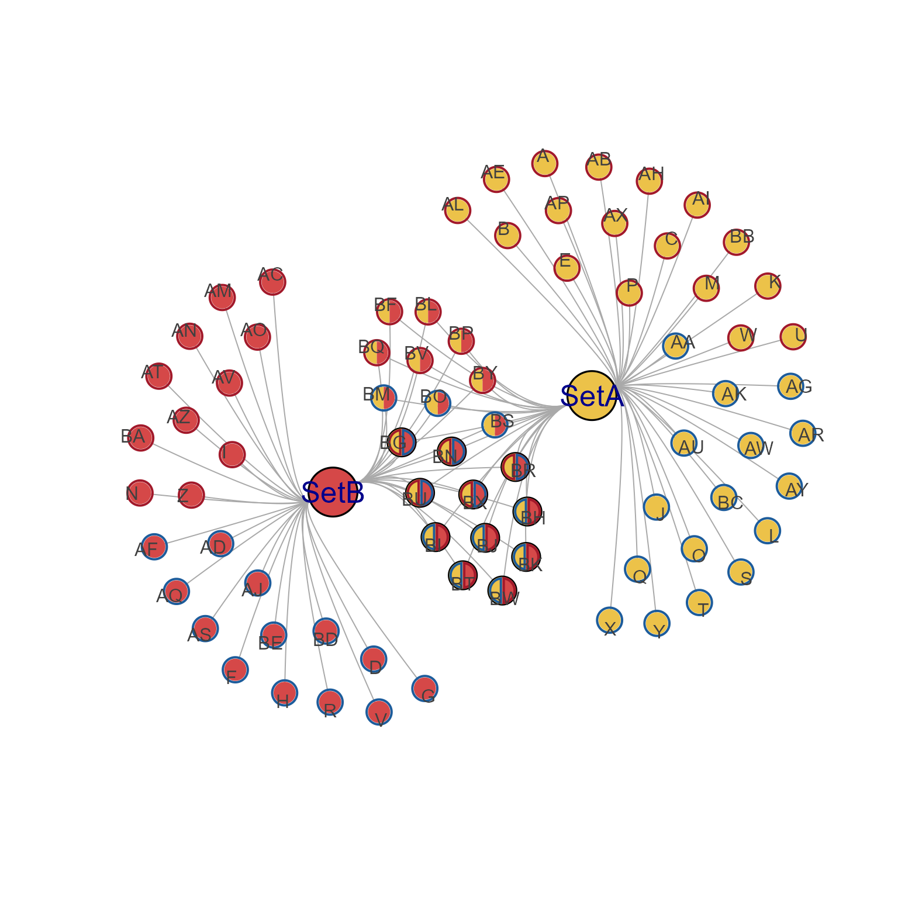

Summarize spacing between igraph nodes or node groups
Source:R/jamenrich-summarize-node-spacing.R
summarize_node_spacing.RdSummarize spacing between igraph nodes or node groups
Usage
summarize_node_spacing(
g,
layout = NULL,
nodes = NULL,
scaled = TRUE,
each_group = TRUE,
node_groups = NULL,
dist_type = c("all", "nearest_node", "all_nodes"),
verbose = FALSE,
debug = FALSE,
...
)Arguments
- g
igraphobject- layout
numericmatrix with x,y coordinates, or NULL (default) to callget_igraph_layout()which uses either:igraph::graph_attr(g, 'layout')(preferred) origraph::V(g)$xandigraph::V(g)$y(deprecated in igraph).- nodes
characterwith optional node names, orintegerindex of nodes ingto define a subset of nodes for which statistics are calculated. Useful to focus on a specific subset of nodes, for example one or two Cnet nodesets.- scaled
logical, default TRUE, whether to report percent spacing relative to the max x-axis/y-axis range, similar to themin_percentandpercent_spacingargument units in other node spacing functions. Note that percent spacing is scaled from 0 to 100.- each_group
logical, default TRUE, whether to summarize each node group. Whennode_groupsis NULL, by default it will useget_cnet_nodesets().- node_groups
listof vectors named by node group, where each vector contains vertex namesigraph::V(g)$name.The purpose is to help summarize spacing within and across node groups.
For Cnet plot data, when
each_group=TRUEandnode_groups=NULL, it will callget_cnet_nodesets()to use Cnet nodesets as node groups.Cnet nodesets were the primary motivation for this function, however it also works well using network communities.
- dist_type
characterstring, default 'nearest_node' with the distance summary to provide:"nearest_node"only the nearest node distance, helpful to assess whether all nodes have a minimum distance from other nodes."all_nodes"all node distances from each node, helpful to assess the overall spacing between nodes.
- verbose
logicalindicating whether to print verbose output.- ...
additional arguments are passed to internal functions.
Value
list of numeric matrix data, named by the summary used.
Columns: 'Min', 'Q1', 'Median', 'Mean', 'Q3', 'Max'.
Rows when
each_group=TRUEinclude eachnames(node_groups).Rows with
each_group=FALSEinclude 'all', 'edge', 'nonedge'. The 'edge' represents only node-node connected by an edge; 'nonedge' represents only node-node not connected by an edge; and 'all' includes all node-node pairings.The list names when
each_group=FALSE:'summary' with overall summary values
The list names when
each_group=TRUE:'nearest_within': nearest-node, within each node group
'nearest_across': nearest-node, across each node group
'all_within': all-nodes, within each node group
'all_across': all-nodes, across each node group
Details
This function is a simple wrapper to calculate typical distances between nodes or node groups in a given network layout.
It is intended to help determine values to use for percent_spacing
with apply_nodeset_spacing().
The optimal value is subjective, and depends upon
the total number of nodes, and the relative spacing of nodes in
subgroups such as Cnet nodesets, or igraph community clusters.
Specific to Cnet plots and bipartite graphs, there are two important metrics:
Within-group spacing
'nearest_within' matrix, column 'Median' is useful to assess the spacing within each group of nodes.
Across-group spacing
'nearest_across' matrix, column 'Min' is useful to assess the minimum distance between two node groups. Column 'Q1' may be useful to determine whether a node group has substantial overlaps with another node group.
Even still, sometimes the node groups overlap each other, which is not summarized here.
Todo
Re-evaluate how to represent summary values that cannot be calculated. For example, a nodeset with only one node cannot calculate within-nodeset distances.
Background:
Typically,
min(NULL)returnsInf(infinite). If there were no node-node distances, the calculation would returnInf.Currently, this function returns
NAfor such cases. The main motivation is for downstream summary statistics, for example taking column median or column mean with argumentna.rm=TRUEfor convenience.
See also
Other jam utility functions:
ashape(),
avg_angles(),
avg_colors_by_list(),
cell_fun_bivariate(),
collapse_mem_clusters(),
colorRamp2D(),
curateIPAcolnames(),
deconcat_df2(),
display_colorRamp2D(),
enrichList2geneHitList(),
find_colname(),
find_enrich_colnames(),
get_hull_data(),
get_igraph_layout(),
gsubs_remove(),
handle_igraph_param_list(),
isColorBlank(),
make_legend_bivariate(),
make_point_hull(),
mem_find_overlap(),
order_colors(),
rank_mem_clusters(),
rotate_coordinates(),
with_ht_opts(),
xyAngle()
Examples
cnet <- make_cnet_test(num_sets=2)
igraph::V(cnet)$size <- igraph::V(cnet)$size * 2;
igraph::V(cnet)$label.cex <- igraph::V(cnet)$label.cex * 2;
jam_igraph(cnet)

summarize_node_spacing(cnet)
#> $nearest_within
#> Min Q1 Median Mean Q3 Max
#> SetA 7.140575 7.407972 7.899545 7.985252 8.303953 9.860987
#> SetA,SetB 5.811383 6.456383 6.753902 6.679846 6.965622 7.246465
#> SetB 7.002380 7.477991 7.723277 7.691525 7.969027 8.668994
#>
#> $nearest_across
#> Min Q1 Median Mean Q3 Max
#> SetA 14.68003 19.43491 25.15193 25.03834 31.63886 33.48678
#> SetA,SetB 12.79187 15.90958 17.15834 17.60574 18.79838 23.02685
#> SetB 16.20952 18.59224 24.41664 24.18094 28.22870 31.54610
#>
#> $all_within
#> Min Q1 Median Mean Q3 Max
#> SetA 7.140575 17.39069 30.76989 33.07367 47.10243 71.40381
#> SetA,SetB 5.811383 11.68569 17.18104 18.97521 26.21139 45.37449
#> SetB 7.002380 15.48131 28.02655 29.96944 43.30363 66.85970
#>
#> $all_across
#> Min Q1 Median Mean Q3 Max
#> SetA 14.68003 45.17449 60.19573 60.99678 77.87559 101.45716
#> SetA,SetB 12.79187 35.29127 43.91737 43.16492 51.70278 66.10256
#> SetB 16.20952 45.60580 64.47152 62.69436 80.40931 101.45716
#>
summarize_node_spacing(cnet, dist_type="all_nodes")
#> $all_within
#> Min Q1 Median Mean Q3 Max
#> SetA 7.140575 17.39069 30.76989 33.07367 47.10243 71.40381
#> SetA,SetB 5.811383 11.68569 17.18104 18.97521 26.21139 45.37449
#> SetB 7.002380 15.48131 28.02655 29.96944 43.30363 66.85970
#>
#> $all_across
#> Min Q1 Median Mean Q3 Max
#> SetA 14.68003 45.17449 60.19573 60.99678 77.87559 101.45716
#> SetA,SetB 12.79187 35.29127 43.91737 43.16492 51.70278 66.10256
#> SetB 16.20952 45.60580 64.47152 62.69436 80.40931 101.45716
#>